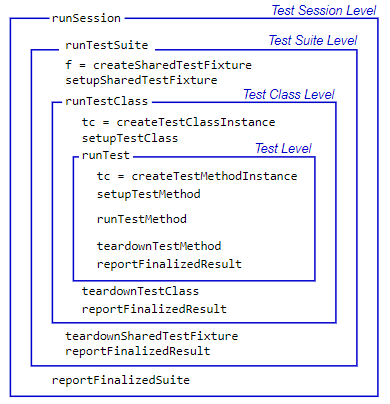

Write Plugins to Extend TestRunner
Custom Plugins Overview
TestRunnerPlugin methods have four levels: test session, test
suite, test class, and test. At each level, you implement methods to extend the
running of tests. Additionally, you implement methods at the test suite, test class,
and test levels to extend the creation, setup, and teardown of tests or test
fixtures.
At the test suite, test class, and test levels, the reportFinalizedResult method enables the test runner to report
finalized test results. A test result is finalized when no remaining test content
can modify it. The test runner determines if it invokes the
reportFinalizedResult method at each level. At the test session
level, the reportFinalizedSuite method enables the test runner to report test
results once the test suite is finalized.
The test runner runs different methods as shown in the figure.

The creation methods are the only set of TestRunnerPlugin methods
with an output argument. Typically, you extend the creation methods to listen for
various events originating from the test content at the corresponding level. Since
both TestCase and Fixture instances inherit from the
handle class, you add listeners using the addlistener method. The methods that
set up, run, and tear down test content extend the way the test runner evaluates the
test content.
Extending Test Session Level Plugin Methods
The TestRunnerPlugin methods at the test session level extend the
running and reporting of the test suite passed to the test runner. These methods
fall within the scope of the runSession method.
The run method at this level, runTestSuite, extends the running of a portion of the entire
TestSuite array that the testing framework passes to the test
runner. The reportFinalizedSuite method extends the reporting of a
test suite that has been finalized by runTestSuite.
Extending Test Suite Level Plugin Methods
The TestRunnerPlugin methods at the test suite level extend the
creation, setup, running, and teardown of shared test fixtures. These methods fall
within the scope of the runTestSuite method.
| Type of Method | Test Level Falls Within Scope of
runTestSuite |
|---|---|
| creation method | createSharedTestFixture |
| setup method | setupSharedTestFixture |
| run method | runTestClass |
| teardown method | teardownSharedTestFixture |
At this level, the createSharedTestFixture method is the only
plugin method with an output argument. It returns the Fixture
instances for each shared fixture required by a test class. These
Fixture instances are available to the test through the
getSharedTestFixtures method of TestCase.
The run method at this level, runTestClass, extends the running
of tests that belong to the same test class or the same function-based test, and
incorporates the functionality described for the test class level plugin
methods.
Extending Test Class Level Plugin Methods
The TestRunnerPlugin methods at the test class level extend the
creation, setup, running, and teardown of test suite elements that belong to the
same test class or the same function-based test. These methods apply to a subset of
the full TestSuite array that the test runner runs.
| Type of Method | Test Level Falls Within Scope of
runTestClass |
|---|---|
| creation method | createTestClassInstance |
| setup method | setupTestClass |
| run method | runTest |
| teardown method | teardownTestClass |
At this level, the createTestClassInstance method is the only
plugin method with an output argument. It returns the TestCase
instances created at the class level. For each class, the testing framework passes
the instance into any methods with the TestClassSetup or
TestClassTeardown attribute.
A test class setup is parameterized if it contains properties with the
ClassSetupParameter attribute. In this case, the testing
framework evaluates the setupTestClass and
teardownTestClass methods as many times as the class setup
parameterization dictates.
The run method at this level, runTest, extends the running of a
single TestSuite element, and incorporates the functionality
described for the test level plugin methods.
The testing framework evaluates methods at the test class level within the scope
of the runTestClass method. If the
TestClassSetup code completes successfully, it invokes the
runTest method one time for each element in the
TestSuite array. Each TestClassSetup
parameterization invokes the creation, setup, and teardown methods a single
time.
Extending Test Level Plugin Methods
The TestRunnerPlugin methods at the test level extend the creation,
setup, running, and teardown of a single test suite element. A single
Test element consists of one Test method
or, if the test is parameterized, one instance of the test parameterization.
| Type of Method | Test Level Falls Within Scope of
runTest |
|---|---|
| creation method | createTestMethodInstance |
| setup method | setupTestMethod |
| run method | runTestMethod |
| teardown method | teardownTestMethod |
At this level, the createTestMethodInstance method is the only
plugin method with an output argument. It returns the TestCase
instances created for each Test element. The testing framework
passes each of these instances into the corresponding Test
methods, and into any methods with the TestMethodSetup or
TestMethodTeardown attribute.
The testing framework evaluates methods at the test level within the scope of the
runTest method. Provided the framework completes all
TestMethodSetup work, it invokes the plugin methods at this
level a single time per Test element.
See Also
Functions
Classes
matlab.unittest.plugins.TestRunnerPlugin|matlab.unittest.TestRunner|matlab.unittest.TestCase|matlab.unittest.fixtures.Fixture|matlab.unittest.TestSuite|matlab.unittest.plugins.Parallelizable|matlab.automation.streams.OutputStream